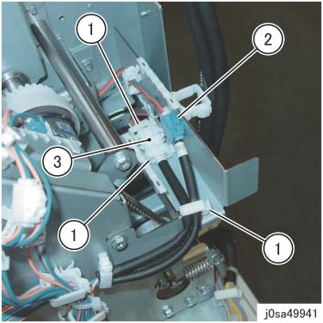
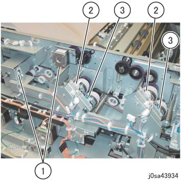
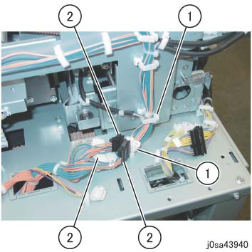
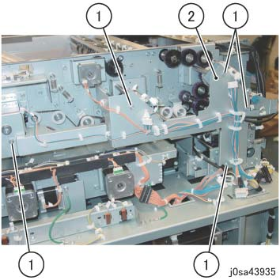
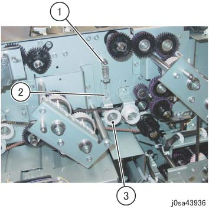
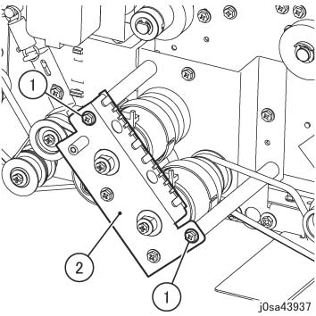
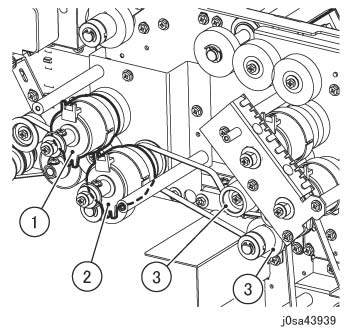
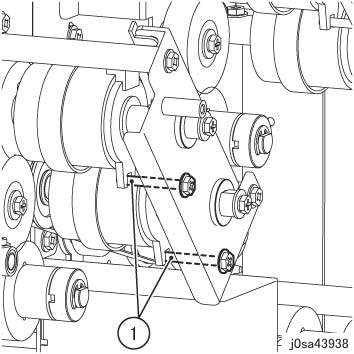

REP 39.8.1 手送 离合器 1, 手送 离合器 2 和 皮带 
参考 PL:PL 39.8
Removal

在...之后 turning 关闭/脱离 电源开关, 确认 the screen 显示 进入 关闭/脱离 和 the [电源 Saver] button 停止 blinking. 然后, 关闭 the 主 电源 开关, 确认 the [主 电源] 灯 具有 turned 关闭/脱离, 和 然后 关闭 the Breaker 和 unplug 电源插头.
拆卸 HCS 从 上游 设备. (REP 39.1.1)
拆卸后盖板. (REP 39.2.2)
拆卸顶盖. (REP 39.2a.1, REP 39.2b.1)
拆卸 HCS 传输 电机 2. (REP 39.7.1)
拆卸 HCS 传输 电机 1. (REP 39.5.1)
断开 门 电磁阀 连接器 (x2). (图 1)
释放 卡箍 (x3) 和 拆卸 线束.
断开连接器 (blue).
断开连接器 (white).

(图 1) sa49941
断开连接器 (x6) 的 手送 离合器 1/2/3, 顶部 纸盘 离合器, 传输 离合器 和 顶部 纸盘 电机. (图 2)
断开连接器（x2）.
断开连接器 (white: x2).
断开连接器 (blue: x2).

(图 2) sa43934
断开连接器（x3） at ...的底部 线束 支架. (图 3)
释放 卡箍 (x2) 和 拆卸 线束.
断开连接器（x3）.

(图 3) sa43940
拆卸线束支架. (图 4)
拆卸螺钉（x5）.
拆卸线束支架.

(图 4) sa43935
拆卸 Tension Pulley. (图 5)
拆卸弹簧.
拆卸螺钉.
拆卸 Tension Pulley.

(图 5) sa43936
拆卸 离合器 支架. (图 6)
拆卸螺钉（x2）.
拆卸 离合器 支架.

(图 6) sa43937
拆卸 手送 离合器 2, the 手送 离合器 1, 和 皮带. (图 7)
拆卸 手送 离合器 2.
拆卸 手送 离合器 1.
拆卸皮带 (x2) 从 the Pulley.

(图 7) sa43939
安装
安装时 the 离合器 支架, affix the 螺钉 的 离合器 支架 到 cutouts 的 离合器. (图 8)
安装 螺钉（x2） 的 离合器 支架 to Cutout (x2) 的 离合器 .

(图 8) sa43938